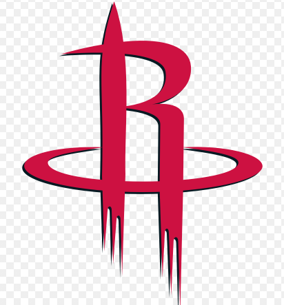

Rockets
 The Houston Rockets are an American professional basketball team based in Houston. The Rockets compete in the National Basketball Association (NBA) as a member team of the league's Western Conference Southwest Division. The team plays its home games at the Toyota Center, located in Downtown Houston. Throughout its history, Houston has won two NBA championships and four Western Conference titles. It was established in 1967 as the San Diego Rockets, an expansion team originally based in San Diego. In 1971, the Rockets relocated to Houston. The Rockets won only 15 games in their debut season as a franchise in 1967. In the 1968 NBA draft, the Rockets were awarded the first overall pick and selected power forward Elvin Hayes, who would lead the team to its first playoff appearance in his rookie season. The Rockets did not finish a season with a winning record for almost a decade until the 1976–77 season, when they traded for All-Star center Moses Malone. Malone went on to win the NBA Most Valuable Player (MVP) award twice while playing with the Rockets and led Houston to the Eastern Conference Finals in his first year with the team. During the 1980–81 season, the Rockets finished the regular season with a 40–42 record but still made the playoffs. Led by Malone, the Rockets reached their first NBA Finals in 1981, becoming only the second team in NBA history to do so with a losing record. They would lose in six games to the 62–20 Boston Celtics, led by Larry Bird, Robert Parish, and future Rockets head coach Kevin McHale. As of 2019, the 1980–81 Rockets are the last team since the 1954–55 Minneapolis Lakers to make it all the way to the NBA Finals with a losing record. In the 1984 NBA draft, once again with the first overall pick, the Rockets drafted center Hakeem Olajuwon, who would become the cornerstone of the most successful period in franchise history. Paired with 7 feet 4 inches (2.24 m) Ralph Sampson, they formed one of the tallest front courts in the NBA. Nicknamed the "Twin Towers", they led the team to the 1986 NBA Finals—the second NBA Finals appearance in franchise history—where Houston was again defeated by Larry Bird and the 67-win Boston Celtics. The Rockets continued to reach the playoffs throughout the 1980s, but failed to advance past the first round for several years following a second round defeat to the Seattle SuperSonics in 1987. Rudy Tomjanovich took over as head coach midway through the 1991–92 season, ushering in the most successful period in franchise history. Led by Olajuwon, the Rockets dominated the 1993–94 season, setting a franchise record 58 wins and went to the 1994 NBA Finals—the third NBA Finals appearance in franchise history—and won the franchise's first championship against Patrick Ewing and the New York Knicks. During the following season, reinforced by another All-Star, Clyde Drexler, the Rockets—in their fourth NBA Finals appearance in franchise history—repeated as champions with a four-game sweep of the Orlando Magic, who were led by a young Shaquille O'Neal and Penny Hardaway. Houston, which finished the season with a 47–35 record and was seeded sixth in the Western Conference during the 1995 playoffs, became the lowest-seeded team in NBA history to win the title. The Rockets acquired all-star power forward Charles Barkley in 1996, but the presence of three of the NBA's 50 greatest players of all-time (Olajuwon, Drexler, and Barkley) was not enough to propel Houston past the Western Conference Finals. Each one of the aging trio had left the team by 2001. The Rockets of the early 2000s, led by superstars Tracy McGrady and Yao Ming, followed the trend of consistent regular season respectability followed by playoff underachievement as both players struggled with injuries. After Yao's early retirement in 2011, the Rockets entered a period of rebuilding, completely dismantling and retooling their roster. The acquisition of franchise player James Harden in 2012 has launched the Rockets back into championship contention in the mid-2010s. Moses Malone, Hakeem Olajuwon, and James Harden have been named the NBA's Most Valuable Player while playing for the Rockets, for a total of four MVP awards. The Rockets, under general manager Daryl Morey, are notable for popularizing the use of advanced statistical analytics (similar to sabermetrics in baseball) in player acquisitions and style of play.Hakeem Abdul Olajuwon (/əˈlaɪʒuɒn/; Yoruba: born January 21, 1963), formerly Akeem Olajuwon, is a Nigerian-American former professional basketball player. He is considered to be one of the greatest basketball players of all time. He was nicknamed "The Dream" during his basketball career after he dunked so effortlessly that his college coach said it "looked like a dream." From 1984 to 2002, he played the center position in the National Basketball Association (NBA) for the Houston Rockets and the Toronto Raptors. He led the Rockets to back-to-back NBA championships in 1994 and 1995. In 2008, he was inducted into the Basketball Hall of Fame, and in 2016, he was inducted into the FIBA Hall of Fame. Born in Lagos, Nigeria, Olajuwon traveled from his home country to play for the University of Houston under head coach Guy Lewis. His college career for the Cougars included three trips to the Final Four. Olajuwon was drafted by the Houston Rockets with the first overall selection of the 1984 NBA draft, a draft that included Michael Jordan, Charles Barkley, and John Stockton. He combined with the 7 feet 4 inches (224 cm) Ralph Sampson to form a duo dubbed the "Twin Towers". The two led the Rockets to the 1986 NBA Finals, where they lost in six games to the Boston Celtics. After Sampson was traded to the Warriors in 1988, Olajuwon became the Rockets' undisputed leader. He led the league in rebounding twice (1989, 1990) and blocks three times (1990, 1991, 1993). Despite very nearly being traded during a bitter contract dispute before the 1992–93 season, he remained in Houston where in 1993–94, he became the only player in NBA history to win the NBA MVP, Defensive Player of the Year, and Finals MVP awards in the same season. His Rockets won back-to-back championships against the New York Knicks (avenging his college championship loss to Patrick Ewing), and Shaquille O'Neal's Orlando Magic. In 1996, Olajuwon was a member of the Olympic gold medal-winning United States national team, and was selected as one of the 50 Greatest Players in NBA History. He ended his career as the league's all-time leader in blocks (3,830) and is one of four NBA players to record a quadruple-double.
 Johnathan Hildred Wall Jr. (born September 6, 1990) is an American professional basketball player for the Houston Rockets of the National Basketball Association (NBA). A Raleigh, North Carolina native, Wall was chosen with the first overall pick of the 2010 NBA draft by the Washington Wizards after playing one year of college basketball for the Kentucky Wildcats. Wall plays the point guard position and is a five-time NBA All-Star and was named to the All-NBA Team in 2017. He was traded to Houston in 2020.On December 2, 2020, Wall, along with the 2023 lottery-protected first-round draft pick, were traded to the Houston Rockets for Russell Westbrook.
Johnathan Hildred Wall Jr. (born September 6, 1990) is an American professional basketball player for the Houston Rockets of the National Basketball Association (NBA). A Raleigh, North Carolina native, Wall was chosen with the first overall pick of the 2010 NBA draft by the Washington Wizards after playing one year of college basketball for the Kentucky Wildcats. Wall plays the point guard position and is a five-time NBA All-Star and was named to the All-NBA Team in 2017. He was traded to Houston in 2020.On December 2, 2020, Wall, along with the 2023 lottery-protected first-round draft pick, were traded to the Houston Rockets for Russell Westbrook.